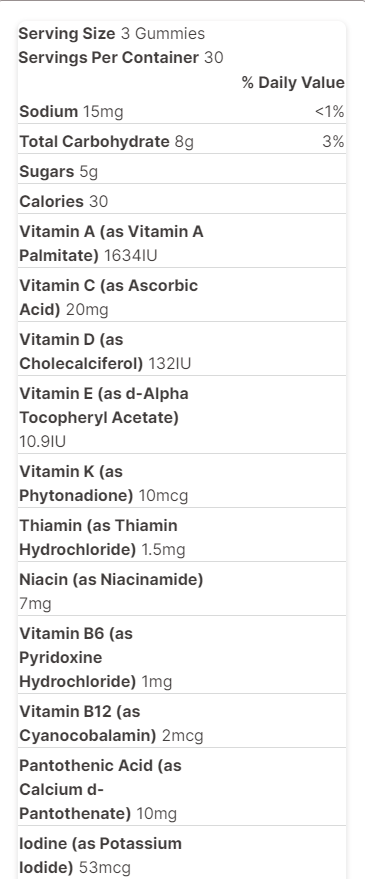

Description
GET CLOSER TO YOUR WEIGHT LOSS GOALS. Hydroxycut provides you with many options to help reach your goals, and these delicious gummies are no exception. They easily mix and match with other Hydroxycut products, and if you're on the go, they're the perfect substitute for your daily Pro Clinical. CONTAINS VITAMINS & MINERALS. Now, your weight loss comes with a side of something extra. This tasty two-in-one gummy is a weight loss supplement, plus it has vitamins all in one. With 16 essential vitamins and minerals, plus a key ingredient for weight loss, this formula does double duty.
Made in USA(from international ingredients)
Take 1 serving (3 gummies) twice daily, 30 to 60 minutes before meals. Do not exceed 2 servings (6 gummies) in a 24-hour period. For best results, use for a minimum of 60 days in conjunction with a calorie-reduced diet and regular exercise program. ©Northern Innovations Holding Corp.
Product Specifications
Product Type: Diet Aids
Product Name: Gummies, Weight Loss + Vitamins Mixed Fruit
Brand: Hydroxycut
FSA Eligible: No
Size/Count:: Diet Aids
Ingredients
Corn Syrup, Sugar, Pectin, Citric Acid, Natural Flavors, Colors, Fractionated Coconut Oil, Lo Han Guo Fruit Concentrate, Carnauba Wax, Contains coconut ingredients
Nutrition Facts
Warnings
Not intended for use by persons under 18. Do not use if pregnant or nursing. Discontinue use and consult a medical doctor if you experience unusual symptoms. Consult a medical doctor before use if you have been treated for, diagnosed with or have a family history of any medical condition, or if you are using any prescription or over-the-counter drug(s), including blood thinners. Women of childbearing age should limit daily vitamin A intake to 10,000 IU (excludes beta-carotene). Consult a medical doctor before starting any diet or exercise program. Do not exceed recommended serving. Improper use of this product will not improve results and is not advised. Use only as directed. KEEP OUT OF REACH OF CHILDREN.
Shipping Specifications
Not eligible for Ship to Store at this time
This product cannot be shipped to the following state(s):
- AA
- AE
- AP
- AS
- AD
Shipping Weight (in lbs): 0.81
Product in inches (LxWxH): 3.06x 3.06x 5.4
See Ship to store FAQs